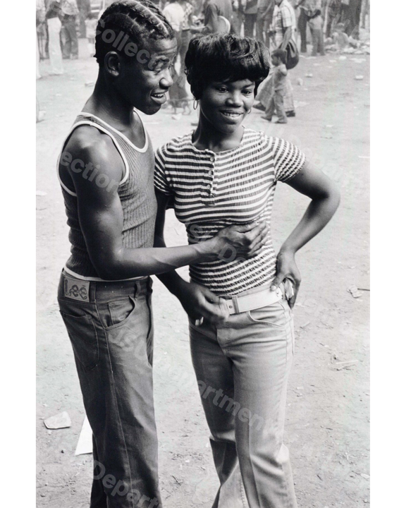

Object Record
Getting Acquainted, Sunday Afternoon in Druid Hill Park, Baltimore, Maryland
Roland L. Freeman
Description
Object description
Documentation image or catalog figure included in the public-facing JSU art database.
Rights and Reproduction
Use and permissions
Copyright status: rights restricted
Digital image courtesy of Jackson State University Department of Art Permanent Collection.
For information concerning image use and reproduction, contact JSU.
Cite This Record
Suggested citation
Roland L. Freeman, Getting Acquainted, Sunday Afternoon in Druid Hill Park, Baltimore, Maryland, 1973, Gelatin silver print, Jackson State University Department of Art Permanent Collection, JSUART-1973-003.